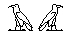

Fig.4.4
4. Creating and Editing Hieroglyphs
4.1. Writing Direction and Cursor
Cursor Positioning: If a new document is created the cursor appears in the left-hand corner of the page, and is ready to write from left to right in a horizontal writing direction. If you want to put the cursor in a different position, there are three ways to do this:
- Press the ControlKey and click at any position of the page
- Position the mouse-cursor on the cursor so that it changes its form to a vertical arrow. Drag the cursor with the right mouse button to any position.
- Position the mouse-cursor on the cursor so that it changes its form to a vertical arrow. Drag the cursor with the left mouse button (this is only possible in a direction that conforms to the involved writing direction) (Fig.4.1)
The Next Hieroglyph Position: The blinking cursor determines the position where the next hieroglyph or hieroglyph group will be depicted on the screen. But its direction and grouping depend on the writing direction. By default the writing direction is set left-to-right in horizontal direction. To select a different writing direction click on one of the offering formulas of the toolbox <Writing Direction> (Fig.4.1). The selected item will change its forecolor to green.
Fig.4.1
When you have chosen a writing direction and positioned the cursor, the next hieroglyph or a group of signs will appear at the position as shown in Fig.4.2 for the three groups of the offering formula.
Fig 4.2: The next cursor position
The Next Cursor Position: Basically the cursor positioning works similar to a word-processor. Here all signs are written with a certain gap between them. The calculation of this gap is quite complicated and is called kerning. This process is not so difficult in VisualGlyph, but rather different because the writing direction of a hieroglyphic text must be taken into consideration too.
If the user creates a sign or a group of signs the cursor jumps depending on the writing direction. By default it will move to the right to position c (see Fig.4.3). The distance between the two cursor positions a and c is calculated by the width of the hieroglyph (or hieroglyph group) b added to the gap c. The gap c can be determined by the user (see chapter 2.5.) and is by default 15% of a font sign height.
Fig.4.3: Calculating the next cursor position
4.2. <Hieroglyphs> Toolbox
Fig.4.4
Generalities: Gardiner sections A-Z, Aa, Ff and some additions can be selected with the combobox. If you open the list with a click on the down arrow-head and select a group, then all signs of that group will appear in the table below. If you move the mouse cursor to the blue button at the bottom to the right, the cursor will change its form indicating the dragging direction. By keeping the left mouse button pressed down the toolbox can be resized. The blue button to the left is a switch-button which changes the hieroglyph titles from Gardiner-list designations into hieroglyphic values, and vice versa.
Generating Hieroglyphs: The hieroglyphs of the Gardiner-list sections are shown in a table. A click on a specific sign transfers this sign to the cursor position in the writing area (for a detailed description of the cursor movement see 4.1). This positioning is different from writing hieroglyphs in groups (see 4.3)
4.3. Creating Groups of Hieroglyphs
4.3.1 Introduction
Groups of hieroglyphs are created with the textbox at the program's foot bar.

Fig.4.5
For writing texts you will normally use this textbox and only occasionally need the toolbox <Hieroglyphs> as described in 4.2. A hieroglyphic text is divided into groups. These are the writing units; they may consist of one, two or three hieroglyphs. By typing a group in the textbox shown in Fig.4.5. and then pressing [Enter] that group is converted into hieroglyphs and will appear on the screen at the cursor position..
When a sign is entered as the only sign within a square, it will be centred if typed using its Gardiner designation or value, but placed on the line if created clicking on a sign in the <Hieroglyphs> toolbox.
Dividing a Text into Groups: the manner of dividing a hieroglyphic text into groups depends on writing in rows or columns. If you are writing in rows, the text is divided by imaginary vertical strokes (Ex.4.1), and if in columns, by horizontal strokes (Ex.4.3). You must divide a text into the smallest groups possible. In Ex.4.1 for example a and b are two distinct groups. Considering a,b as one group will create an error. Not all texts can be divided into groups consisting of one to three hieroglyphs: for creating these more complicated cases see below.
Sign Position within a Group: The operators < + > and < / > are used to force a sign to a position within a group.
They are taken from mathematics: may be written as (a+b)/c etc. VisualGlyph uses these operators to designate the sign position within a square. The operator < + > means side by side, < / > means one sign upon another.
4.3.2 Writing Direction
Select the horizontal writing direction a in the toolbox <Writing Direction> (Fig.4.1). To create the text in Ex.4.1 type the following:
sw[Enter]di[Enter]Htp/t+p[Enter]aA/nb[Enter]Ab[Enter]b[Enter]Dw[Enter]
Ex.4.1
One Sign: a,b,d,f,g and h are single signs. The only remarkable sign is h. Here you see that VisualGlyph centres a low sign within the row. This is a major difference from creating single signs with the toolbox <Hieroglyphs> (see 4.2), where the signs always appear at the base line.
Two Signs: The group e is written as aA/nb. You cannot use the operator < + > for two signs in a horizontal direction, e.g. Ab+b will create an error. If the two signs of a horizontal group do not have the same width, they are centred, as in Ex.4.2.c.
Three signs: The group Ex.4.1c is more complicated and is written as Htp/t+p. This is the abbreviated form of Htp/(t+p). Ex.4.2 shows the possibilities of creating groups with three hieroglyphs. p+t/pt is the abbreviated form of (p+t)/pt and n/t+t for n/(t+t).
Ex.4.2
Writing in Columns:
Select the vertical writing direction e in the toolbox <Writing Direction> (Fig.4.1).
One sign: b,d,e,f and h are groups that consist of single signs. Single signs are centred within the column.
Two signs: a and g are examples of a two-sign group. If the two signs have a different height the lower sign is centred in relation to the taller sign, see Ex.4.4c for a similar centring of three signs.
Three signs: Ex.4.4 includes examples of groups with three signs.
Ex.4.3
Sw+di[Enter]Htp[Enter]t+p[Enter]nTr[Enter]aA[Enter]nb[Enter]Ab+b[Enter]Dw[Enter]
Ex.4.4
Here too brackets can be used: Sn+nw/t is equal to Sn+(nw/t) and p/t+H equal to (p/t)+H.
Writing in Columns with an Originally Horizontal Writing Direction:
You will need this function for writing texts with several variants, e.g. CT IV sp.335, V sp.402,403 etc. Select button c (or d) in the toolbox <Writing Direction> (Fig.4.1) and type:
in[Enter]n/n[Enter]A1[Enter]mA[Enter]ir[Enter]A[Enter]A1[Enter]mt[Enter]1/f[Enter]
Ex.4.5: CT V, 173c
4.3.3 Adding Properties
Selecting a writing direction essentially defines the cursor movement but it also sets the rotation angle and hieroglyph mirroring. Apart from this you can define other properties. This is done by means of the <Format Glyph> toolbox.
Fig.4.6
Here you can change the rotation angle, the checkbox <Mirror> or <Rubric>. Hieroglyphs created in this way will appear as defined. Ex.4.6. is written like Ex.4.5 but with <Mirror> unchecked and <Rubric> checked.
Ex.4.6
4.3.4 Properties of the Writing Area
It is important to understand the difference between the properties of the writing area and those of a single hieroglyph. The properties of the writing area are initially defined by setting the writing direction. The writing direction can only be defined with this action. But the disposition of signs in Ex.4.6. implies a rotation angle and sign mirroring. The latter property [i.e. mirroring] and the rubric option can also be changed and attributed to the writing area, but only when there is no object is selected. For example, when signs following the last-written sign are meant to differ from it by pressing the <Mirror> or <Rubric> buttons, that last-written sign should first be relieved of its blue handle as otherwise only that sign will be changed.
After these settings all groups that are be created appear with these properties until the next change takes place. The effect can be demonstrated by an example. If you write groups with the default writing direction and then press the <Rubric> button, you will write the last-typed hieroglyph and the next ones with these properties (Ex.4.7a). But after this you can select one of the hieroglyphs just written and define as non-rubric and change its size (Ex.4.7b). But the next group of signs created will appear with the properties of the writing area, namely rubric (Ex.4.7c).
Ex.4.7
4.4. Editing Hieroglyphs
After creating a hieroglyph it can be changed in two ways:
- Changing the format
- Moving or copying a sign or a range of signs
Before these actions can be performed the user has to select one or several hieroglyphs.
4.4.1 Selecting Hieroglyphs
Selecting a Single Sign: There is an invisible rectangle around a hieroglyph. This rectangle touches the outer limits of that hieroglyph and determines its width and height:
Fig.4.7: The Invisible Rectangle
In order to select a single sign the user has to click inside this frame. In some cases two or more hieroglyphs can overlap:
Fig.4.8: Overlapping Signs
Fig.4.8 shows two hieroglyphs with their surrounding frames which are not visible in VisualGlyph. If the user clicks in the a-frame the imA-glyph is selected, a click in the b-frame selects the x-glyph. But there is an area (shown above in yellow) where both frames overlap. If the user clicks inside this area one of the two signs is selected. A second click will select the other sign etc. The same holds true if three or more signs overlap: one sign after another will be selected. The selected sign is marked by a blue handle at the lower left-hand corner:
Fig.4.9: The Handle
If the user doubleclicks on that handle it becomes transparent. Another DoubleClick resets the handle to its original opaque state.
Multiselecting Hieroglyphs: If you want to select several hieroglyphs you have to click on a point in the writing area (see the arrow in Fig.4.10a). With the left mouse buttonpressed down, drag the cursor to the right and to the bottom. After releasing the mouse button all signs inside the blue dashed frame will be selected. This is indicated by the blue frame that surrounds the selected signs and by the blue handle at the lower left side (see Fig.4.10b). Because the di-sign in Fig.4.10a is not completely inside the blue frame it has not been selected.
Fig.4.10: Selecting Hierolyphs
For multiselecting objects in general see: 5.9.2 Multiselecting Objects.
4.4.2 Moving and Copying Hieroglyphs
After selecting a hieroglyph or a range of hieroglyphs the user can move that selection or copy it. To do this move the mouse cursor over the blue handle. The cursor will appear as a vertical arrow. In order to move the selection press the left mouse button down, drag to the destination point and release the mouse button (cf. Fig.4.11). Copy the selection by pressing <Control> while performing the drag-and-drop action as described above (cf. Fig.4.12). By default with Win95 and Win98 you will see no hieroglyphs inside the blue dashed rectangle while dragging but on all other systems the selected hieroglyphs will appear. To switch between these two possibilities use Contol-F (Menu: View/Fast Drag and Drop).
You can move a selected hieroglyph or group of hieroglyphs by using the arrow keys. In this case the selection will change its position pixel-wise.
Fig.4.11: Moving Selected Hieroglyphs
Fig,4.12: Copying Selected Hieroglyphs
To move or copy selected hieroglyphs to another page as the current one use the clipboard (see chapter 7).
4.4.3 Formatting Single Hieroglyphs
With VisualGlyph you can create hieroglyphs at any position, size and rotation angle. Some more complex examples that use these functions are descibed here. Formatting can only be applied to single hieroglyphs.
Fig.4.13
The hieroglyph group in Fig.4.13 was written with a horizontal writing direction as:
i[Enter]w/f[Enter]
Sizing a Hieroglyph: The result is not satisfactory. In the group w/f the w-Glyph should be positioned at the top of the row, but it presently occupies the full height of the row. The f-glyph is positioned correctly at the bottom of the line but appears too large. Hieroglyphs like this need sizing. To do this select the w-glyph (see 4.4.1) and open the <Format hieroglyph> toolbox. Set the value of the scroolbar to 18 and move the sign to the position as seen in Ex.4.6.
Ex.4.8
Rotating Hieroglyphs: Select a hieroglyph first. For the main rotation angles 0°, 90°, 180°, 270° you can press one of the four blue buttons (Fig.4.13). For other rotation angles use the scrollbar. Ex.4.9 shows the rotation angles 0°, 45°, 90° for the mDAt-glyph.
Ex.4.9
Mirroring Hieroglyphs: Select a hieroglyph and click on the checkbox <Mirror>.

Ex.4.10: Mirrored Hieroglyphs
Rubric: Select a hieroglyph and click on the checkbox <Rubric>.
Ex.4.11: Rubric Hieroglyphs
4.4.4 Changing the Hieroglyphic Value
Select a hieroglyph first and type a new hieroglyph value into the <Change Value> field of the <Format Glyph> toolbox (see.Fig.13). After pressing [Enter] the selected hieroglyph will change. As a second possibility to change a hieroglyph value you can right click on a hieroglyph in the toolbox <Hieroglyphs> (see. Fig.4.4).
4.5 "Hieroglyph" Info
Fig.4.14
To show the <Glyph Info> of a hieroglyph which has already been written, select that hieroglyph and right-click on the blue handle. The small window shows the hieroglyph, its Gardiner-signlist designation and its value.